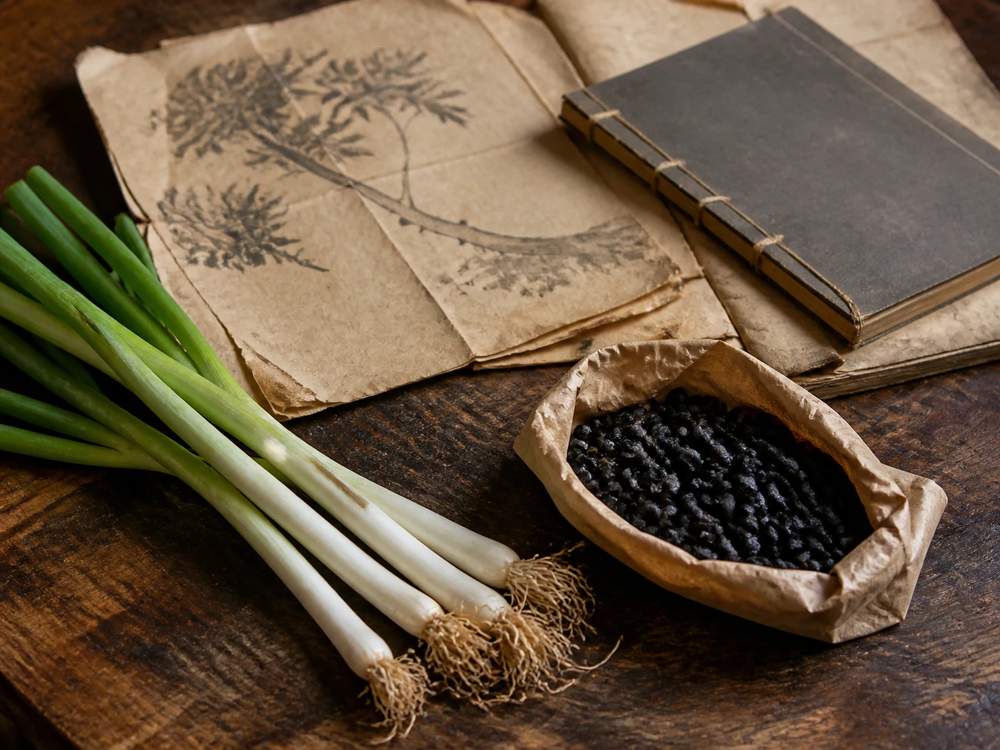

Scallion White and Soybeans on an Old Formula Page
In an old emergency-formula tradition, scallion white and fermented soybeans occupy one short line before the text moves quickly to water, heat, and the body.

Two kitchen materials on the table
Scallion white is pale, wet at the cut face, and sharp enough to scent the board before the knife reaches it. Fermented black soybeans arrive darker and drier, knocking softly against folded paper nearby. Set beside each other, they look more like the beginning of a meal than the subject of an old medical text.
That closeness to the kitchen is what makes the formula commonly called Cong Chi Tang interesting to this archive. It does not make the formula ordinary advice. An ingredient can belong to cooking, family memory, and medical writing at different times without those uses becoming interchangeable.
A short line in the text
The Waitai Miyao preserves a version of the formula while attributing it to the earlier Zhouhou tradition. The historical text gives amounts and claimed actions, but this record does not need to reproduce either.
Xiangru Drink from an Old Summer Formula follows another written formula by keeping three ingredients separate on folded paper. That article begins with a neighbor's notebook and earthen pot, while this one begins with a textual witness. No invented grandmother or household scene is needed to make the old page feel close.
The old page stays closed
Historical survival does not establish present-day safety or effectiveness. The National Center for Complementary and Integrative Health notes that evidence for Chinese herbal products is mixed and warns of safety and quality concerns. This article does not provide a preparation method and does not recommend the formula for a cold, fever, or respiratory illness.
In Scallion White in the Early-Cold Kitchen, wet shoes, dinner scallions, and a small household pot form a separate family record. The resemblance of one ingredient does not prove an unbroken recipe or the same purpose. Here the beans return to their paper, the scallion ends return to the board, and the book closes without becoming an instruction sheet.